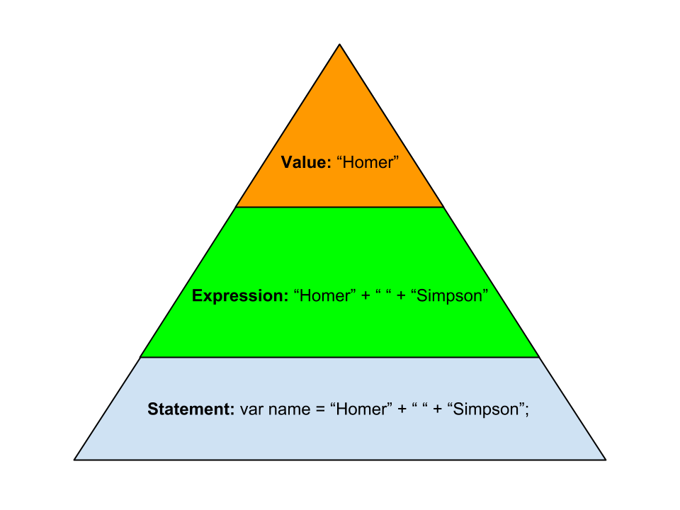

Week 5, Day 1: Introduction to Programming
Programming languages are created to create a communicate a set of instructions to a machine. There are many different programming languages that are preferable in different situations / projects. At the end of the day, every programming language will eventually be turned into 1s and 0s that your computer will understand.
There are very low level languages, like C and assembly, which are used for things like creating the underlying of an operating system or the logic in elevator buttons.
Then we have medium to high level languages which are used for specific use cases and environments.
Objective C is used for iPhone apps. Java is used for Android Apps.
Ruby, Python and PHP are great for the backend of websites and web apps.
JavaScript is used primarily for front-end programming. Things that happen in the browser.
All languages do the same thing: take instructions from the programmer and run them in their environment. The syntax, or how the language is written, for each of these languages are different.
Spitting out the text “Hello World” in each language is different, let’s look at a few examples:
http://en.wikipedia.org/wiki/List_of_Hello_world_program_examples
The role of a programmer is to think of a solution to a real-world problem and break the solution down into “code” (simple mechanical instructions that the computer can understand). The computer simply runs the series of instructions.
JavaScript
Instructions to the computer are given by using a series of 0’s and 1’s. Fortunately for us, programming languages have been created to allow us to communicate with the computer in a more natural way. JavaScript is one such language.
Read more about JavaScript - especially the history, ECMAScript and the uses of JavaScript.
- https://developer.mozilla.org/en-US/docs/Web/JavaScript/A_re-introduction_to_JavaScript (just the Introduction for now)
- https://developer.mozilla.org/en-US/docs/Web/JavaScript/Guide/JavaScript_Overview
REPL
A REPL (read, eval, print, loop) is an interactive environment where you can type instructions for the computer and the computer will read it, evaluate/run it, print the result and then make itself ready for the next instruction.
Put simply, a REPL will take the code you give it and return a result.
A JavaScript REPL is available inside the Google Chrome Web Browser. Open the JavaScript console by going to View => Developer => JavaScript Console or by clicking the console tab in chrome dev tools.
If you see > and a blinking cursor… then you’re there! Ok, give the computer a simple instruction:
> 1 + 1
2
Expressions and values
The instruction that you gave is called an expression. What the computer returns is a value. In the example above 1 + 1 is an expression and 2 is a value. Values are simply pieces of data (sequences of 0’s and 1’s). An expression is any piece of code that resolves to a value.
Vocabulary is very important because it helps us ask coherent questions and adds structure to our thinking. Just as we learned selector, rule, property and value in CSS, go ahead and drill expression and value into your head now.
Types
Number
Every value has a type. So far you have seen numbers. In other programming languages you can have different types of numbers such as floats or decimals, luckily for us JavaScript just has one type of nuber, just like regular math.
You can do basic arithmetic with numbers.
> 55 * 20
> 23.5 - 11
> 6 / 1.5
> 34 + 66.3
The symbols (*, -, /, +) are called operators. Parentheses can be used to group operations. Just like you learned in gradeschool, BEDMASS applies. The order in which the computer will do the math is:
Brackets
Exponents
Division
Multiplication
Addition
Subtraction
Exercises
In pairs, solve the following questions by using JavaScript. You can type all your equations into the chrome developer tools console.
**Hint: ** When in the console, press the up arrow on your keyboard to bring back the last run line of code.
- how many hours are in a year? Solution: 365 * 24
- how many minutes are in a decade? Solution: 10 * 365 * 24 * 60
- how many seconds old are you? Solution: 26 * 365 * 24 * 60 * 60
String
Another type is called String. Strings are sequences of characters within quotes, they are used to store text. Put simply, strings are text.
> "hello"
> "hello there!"
Exercises
-
String concatenation is the “addition” or joining of strings. Joining the three strings “Javascript”, “is” and “awesome!” to get “JavaScript is awesome!”? Would be
"Javascript" + " " + "is" + " " + "awesome!" -
You can create strings by using either single or double quotes. For example, ‘HackerYou’ and “HackerYou” are equivalent. Again, pick one and stay consistent.
What happens when you type in the console: 'She's a HackerYou student'.
How would you solve this issue?
Solution: SyntaxError! When you need to use a character that will break your string, you can Escape the character with a backslash \ So: , 'She\'s a HackerYou student'
- What happens when you type in the console
'HackerYou' * 6
'HackerYou' + 6
'HackerYou' * 'Class'
NaN (not a number) for first and third examples. We can’t do some operations (like multiplication) with types that are not numbers. Multiplying two strings doesn’t make sense anyhow!
There are more types (including undefined and boolean) but we’ll cover them when appropriate.
Variables
A variable refers to or holds a value.
You can think of a variable as a way to name, hang on to and reference data that may or may not change in the future.
Assigning a value to a variable
We can store a piece of data and retrieve it whenever we want with variables. The keyword var is used to declare a variable into existence.
> var name;
Type the above into your terminal. Now reference it’s value by typing ‘name’. What do you see? Nothing! We have created the variable but not yet assigned anything to it.
We can make a variable refer to a value by using the assignment operator =:
> name = "Homer";
"Homer"
The value on the right hand side is stored in the variable on the left hand side.
Now type name into your console again. What do you see?
We can combine the above into a single line of code:
> var name = "Homer";
undefined
What’s that “undefined”? Although it may look like an error, it is not. Undefined is a value type that means “I don’t have a value” (pretty meta!). No value is returned because var name = "Homer" is not an expression, it’s a statement. And statements don’t always return a value.
You can always double check your variables by typing the variable name into your console and seeing what it returns.
Once you have declared a variable with var you don’t need to keep using the keyword var. You can for example reassign a variable to another value without using var. It is best practice to declare all of our variables at the top of our code to avoid confusion:
> var name;
> name = "Homer";
> "My name is " + name
> name = "Marge";
> "My name is " + name
Exercises:
- Consider the following code, what value does x refer to in the end?
var x = 55;
var y = 10;
x = 12;
Solution: x refers to the value 12.
- Consider the following code, predict what the result will be:
var 8 = x;
Solution: SyntaxError: Unexpected number
Using Variables
Reuse this data in another expression by just typing the name of the variable.
> var years = 25;
> var days = years * 365;
Syntax
Why did we use semi-colons at the end of the expressions above? Why did the computer complain when we typed 'She's a HackerYou student'? Just like any other language, there are rules (or grammar) to be followed. Computers need code written in a very specific way or they will not understand it. Syntax errors are very common – professional programmers make these errors all of the time. Don’t be intimidated by these errors; they’re easy to fix!
Semi-colons
Code is composed of statements (instructions) that are usually executed one at a time from top to bottom. Each statement ends with a semicolon. There are exceptions but we’ll explain them when the time comes.

A value is an expression, an expression is a statement, therefore a value is technically a statement.
Javascript is extremely non-forgiving with it’s syntax, so you must pay very special attention to things like semi-colons. Just like CSS, the computer needs to know when one line ends and another one starts.
Exercise: Add semicolons and line breaks where appropriate to make the below code work without errors.
"I'm just a value!" var schoolName = "HackerYou" var numOfStudents = 25 schoolName + " has " + numOfStudents + " students."
Solution:
<div class="solution">
"I'm just a value!"; var schoolName = "HackerYou"; var numOfStudents = 25; schoolName + " has " + numOfStudents + " students.";
</div>
Whitespace
Whitespace is usually insignificant in JavaScript. There are some situations where whitespace is needed to avoid ambiguity.
Exercise: In the statement var name = "Homer" ;, which whitespaces are optional and which are not?
Solution: a space is needed between var and name but the other whitespaces are unnecessary. var name="homer" will work just fine but varname="homer" will create a variable called varname… which is not what we wanted.
Naming Conventions
- Variable names are expected to start with a non-numeric character (letter, _, or $) followed by any character. So
var 23peopleis invalid. - Do not use spaces. Avoid underscores. Dashes will not work. Use camelCasing. For example,
var myNameis preferred tovar my_nameandvar my nameis invalid.
See why we recommended camelCasing in CSS now? Consistency across programming languages is preferred.
Commenting
Comments are not executed so you can use them to puts some notes that will help you remember what your code does. Inline comments can be added with //. For example:
// There are 365 days in a year
var ageInDays = 26 * 365;
Just like in Sass, /* */ are used for multiline and mid-line comments.
/*
Many
Lines
wow
*/
Some common errors:
Have a look at the code below and see if you can spot the error. Then run the code and verify that you spotted an error. Fix the code and verify that it runs properly.
> var myName = "Homer";
> myNme;
Solution: ReferenceError: myNme is not defined. The variable was simply misspelled but the computer doesn’t know that. So it tells you that the misspelled variable doesn’t exist.
Now repeat the above steps with the following code:
"JavaScript" + " is " + 18 + years old";
Solution: Syntax error. Missing a double-quote. "JavaScript" + " is " + 18 + "years old";
We will of course see more errors, get used to it!
Built-in Functions
So far we can do basic operations but nothing too complicated. Type the following in the console: prompt("What's your name?");
prompt is a JavaScript function. Functions at their most basic level are simply chunks of code that can be run at any point in time.
Syntax: functionName(arguments). The parenthesis are required even if the function doesn’t have any arguments.
Terminology:
- Argument: a value provided to a function
- Pass: to provide arguments to a function
- Call: ask JavaScript to evaluate a function
- Return: pass back a value
In the example above, the value “What’s your name?” was passed as an argument to the function named prompt. We called the function and it returned the value that the user typed in.
Assigning a value from a function.
Functions return values and you can then assign them to variables. For example, the prompt() function will return whatever the user types in.
To assign the user-entered value to a variable, run:
var name = prompt("What is your name?");
Then type name into the terminal. Does that value come back?

Exercises
There are many built-in functions that you can play with, for example:
- alert()
- console.log()
- Type
Math.(without hitting enter) and you’ll see a list pop up of available math related functions. E.g., Math.cos(), Math.max(), Math.min().
Go to the Mozilla Developer Network and use the search box at the top of the page to learn more about these functions.
After 5 minutes we will review each of these functions together.
Exercise 1: Create a program that asks for a person’s age in years and then returns their age in seconds.
Solution:
<div class="solution">
var age = prompt("What's your age in years?");
age * 365 * 24 * 60 * 60
Multiply by 365 to get days, by 24 to get hours, by 60 to get minutes and then 60 again for seconds.
</div>
Exercise 2: Create a program that asks for three numbers and then returns the maximum of the three.
Solution:
<div class="solution">
var num1 = prompt("First number");
var num2 = prompt("Second number");
var num3 = prompt("Third number");
Math.max(num1, num2, num3);
</div> Exercise 3: Create a program of your choosing. Bonus points if you can use everything that we’ve covered so far. Here are a few ideas from easy to challenging
- A program that finds the youngest person out of three ages.
- A program that converts the oldest of three student’s age into dog years.
- A program that adds sales tax to a price.
- A program that returns a random number between 1 and 100
- A program that returns “Your random number is : “ and a random number between 16 and 79.